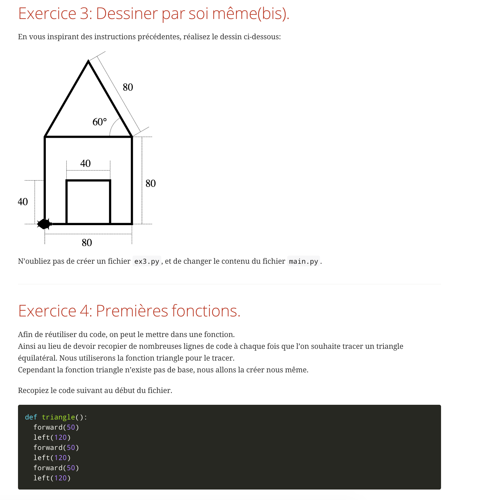

Depuis la rentrée 2017, les élèves de 2nde peuvent choisir, au lycée Paul Lapie, le nouvel enseignement d'exploration "informatique et création numérique" (ICN).
Quel programme ?
L'objectif de l'enseignement ICN est de faire découvrir aux élèves la science informatique qui se cache derrière leurs pratiques numériques quotidiennes. Les thèmes abordés seront :
- l'algorithmique ;
- la programmation : principalement en langage Python ;
- la numérisation de l'information : la représentation binaire, le codage des textes et des images...;
- Internet, création de page web...
Quelles méthodes ?
Cet enseignement privilégie un apprentissage par la mise en activité. Les activités proposées pourront prendre la forme de résolutions de problèmes avec ou sans ordinateur. L'année sera découpé en deux modules, chaque module amenant progressivement les élèves à l'élaboration d’un projet (par exemple, réaliser un programme de jeu éducatif ou un site Internet) .
Pour qui ?
Cet enseignement s’adresse à tous les élèves de seconde quel que soient leurs connaissances en informatique et leur choix de série pour la poursuite de leur scolarité.
Il est cependant important de se rendre compte que la science informatique est une science et une science proche des mathématiques, et qu'il ne faut pas la confondre avec l'usage d'un ordinateur ou la bureautique.
Des exemples d'activités:
Lien vers la présentation des portes ouvertes.
Des T.P «classiques» sur le langage de programmation Python.

Préparation aux concours Castor et Algorea:
Des exemples de réalisations des élèves:
Autour du projet une histoire dont vous êtes le héros.
Un jeu du pendu:
Autre:
d